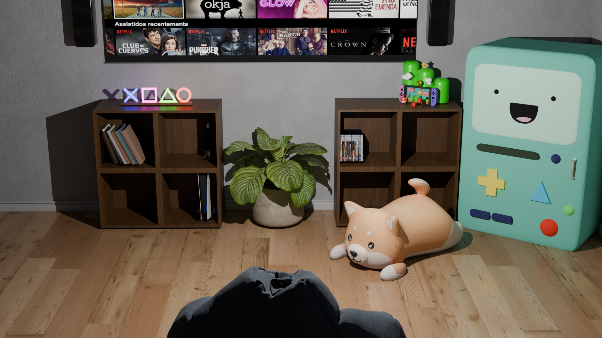
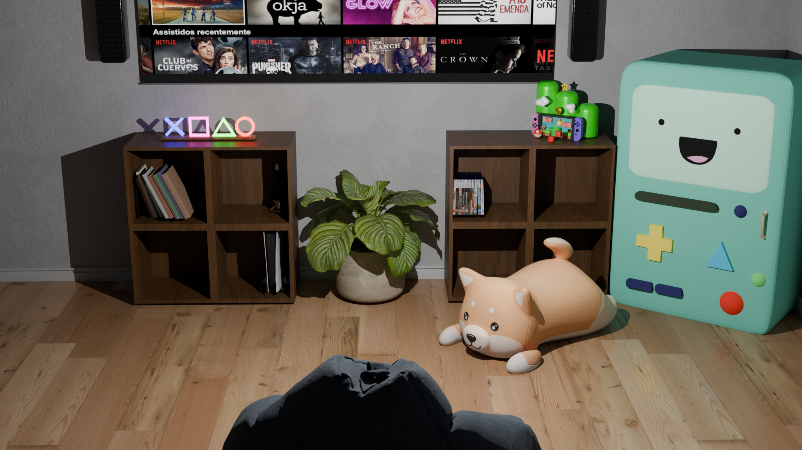

Meuble Ikéa
 

Contexte Projet:
Ce projet fut le dernier projet évalué lors de la matière Blender, le but était cette fois-ci, comparé à la switch, de mettre en œuvre nos connaissances et compétences sur le logiciel Blender, sans être guidé par un fichier donné en cours, que ce soit la modélisation, la texture, la caméra et la ou les lumières. Tout en ayant la permission de rechercher des éléments sur Blender kit pour compléter notre scène.
Outil(s) Utilisé(s):
Blender pour la modélisation, le texturing et le rendu 3D.
Procédé de Création:
Pour créer ce projet, j'ai commencé par me rendre sur le site d'Ikea et son catalogue afin de rechercher le meuble que j'allais créer. Une fois celui-ci choisi, j'ai pu commencer à le modéliser, comme vous pouvez le constater, j'ai choisi un meuble simple à faire. Et cela s'explique par le fait que je voulais perfectionner les textures de mes modélisations et donc que je voulais réellement travailler sur cela. De plus, le "frigo" que vous pouvez voir sur les photos est le personnage BMO de Adventure Time que j'ai réalisé de mon côté pour m'entraîner, et comme dans les consignes il nous était demandé/conseillé de rajouter des détails comme celui-ci. Une fois mon meuble terminé et que j'étais satisfaite du résultat, je me suis rendue sur Blender kit afin de rechercher la scène que j'allais utiliser et les meubles qui m'intéressaient afin de réaliser ma composition.
Besoin Répondu:
Le besoin répondu était de mettre à l'épreuve différentes compétences dans la modélisation 3D.